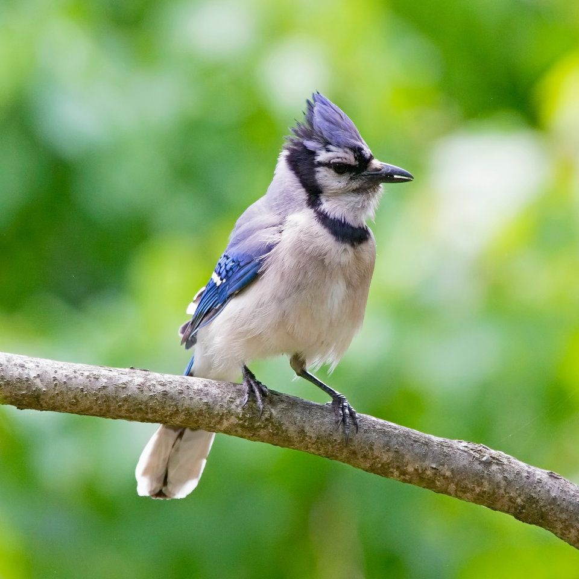

Beautiful Blue Jays
Blue jays, those vibrant feathered acrobats of the treetops, are a common sight in eastern North America. With their striking blue plumage, jaunty crests, and a penchant for mischief, they’re like the avian equivalent of a jazz band—always improvising and making a splash.
Clever birds aren’t just about looks, though. They’ve got brains to match their beauty. Blue jays are known for their intelligence and complex social structures. Plus, they’ve got a repertoire of calls that can mimic everything from hawk screams to squirrel chatters. It’s like having a feathered DJ in the neighborhood!
So next time you spot a blue jay darting through the branches, take a moment to appreciate their vivid colors and lively antics. And who knows, maybe they’re discussing baseball strategy up there—after all, they share their name with the Toronto Blue Jays!